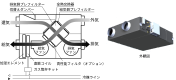

2023年
問題76 パッケージ型空調機方式で使用する外気処理ユニットに関する次の記述のうち，最も不適当なものはどれか．
（1）ビル用マルチパッケージと同一の冷媒ラインに接続可能である．
（2）導入した外気に加熱・冷却を行うことが可能である．
（3）導入した外気は加湿された後に直膨コイルを通過する．
（4）全熱交換器を組み込んだユニットである．
（5）給排気の風量バランスについて注意が必要である．
2023年
問題76 正解（3） 頻出度AAA
導入した外気は直膨コイルを通過したあとに加湿される（2023-76-1図参照）．
加湿には蒸発熱の供給が必要なので加熱コイルの後が適切である．

出典 Pansonic
https://www2.panasonic.biz/jp/air/pac/build/unit_in/in16.html を基に作成
パッケージ型空調機による個別方式空気調和設備では別途換気設備並びに加湿設備を付加しなければならない．個別方式空気調和設備の換気設備には主に2023-76-1表のような方式がある．
2023-76-1表 個別方式空気調和設備の換気設備
| 方式 | 長所 | 欠点 | |
| 1 | 中央方式の外調機 | 十分な換気，加湿が可能 | ダクト設備など高価 |
| 2 | 全熱交換器による換気＋室内機に加湿器 | 低コスト | 換気，加湿とも不十分になるケースが見られる |
| 3 | 外気処理ユニット（全熱交換器＋直膨コイル＋加湿器） | 十分な加湿が可能 | 給排気がアンバランスとなる |
| 4 | 外気処理専用パッケージ型空調機（直膨コイル＋加湿器） | 十分な換気，加湿が可能 | 設備コスト，運転コストともに比較的高め |
| 5 | ヒートポンプデシカント調湿型外気処理装置 | 加湿のための水配管が不要 | 冬期の加湿不足を解消できるかは検証が必要 |
表の2や3では，室，ゾーンからの排気を全熱交換器とトイレなどの排気ファンが奪い合うかたちとなって給排気のバランスがくずれ，全熱交換器の効率が著しく低下し，その結果として冷暖房の不足も招くケースが見られる．
4の「外気処理専用パッケージ」は大容量の加湿器，十分な能力の冷媒直膨コイルの組み込みが可能で，3の外気処理ユニットより高性能である．また熱交換のための排気が不要なため，給排気のバランスについての問題が発生しにくい．
5の「ヒートポンプデシカント調湿型外気処理装置」は水配管レス外調機と呼ばれる新技術であるが，『デシカント装置の吸湿・放湿原理から，加湿に用いられる水分は，装置運転開始時に室内空気が保持している水分と，通常は加湿用としてはほとんど期待できない運転中に侵入・発生する水分（外気，人体潜熱発熱分等）のみであり，建築物衛生法，並びに建築基準法に定められている加湿時の相対湿度が達成可能かどうかについては，十分な検討が必要である．』（公益社団法人 日本建築衛生管理教育センター「新建築物の環境衛生管理第2版第1刷」中巻250頁）．
現在唯一商品化されているのはダイキンのDESICAで，技術的なミソは，ヒートポンプの冷却，加熱の熱交換コイルに吸着剤（デシカント素子）を直接塗布して，コイルと空気の流れを適宜切替えて外部からの給水，外部への排水なしに室内空気の湿度を調整しようとするものである．